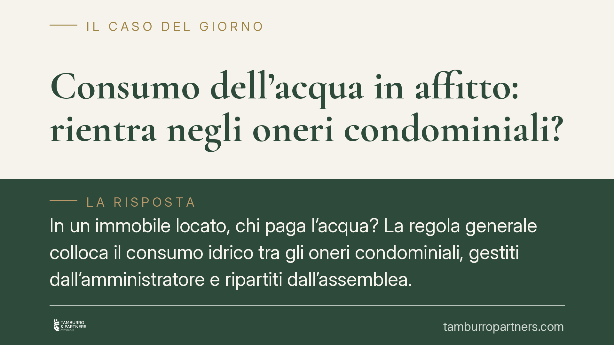

Consumo dell'acqua in affitto: rientra negli oneri condominiali?
In un immobile locato, chi paga l'acqua? La regola generale colloca il consumo idrico tra gli oneri condominiali, gestiti dall'amministratore e ripartiti dall'assemblea. Ma tra proprietario locatore e inquilino conduttore la voce si sposta sugli oneri accessori. Fare chiarezza evita contestazioni sui conguagli, soprattutto negli edifici con sottocontatori individuali.

Il caso: acqua, condominio e contratto di locazione
La domanda ricorre spesso: quando un appartamento è affittato, il consumo dell'acqua è un onere condominiale o una spesa a carico dell'inquilino?
Le due prospettive non si escludono. Sul piano condominiale, l'acqua è una spesa comune che l'amministratore anticipa e l'assemblea ripartisce. Sul piano del rapporto locatizio, quella stessa voce si traduce in un onere accessorio che, di norma, grava sul conduttore.
Un orientamento della giurisprudenza di merito ha ribadito questi principi in una pronuncia recente. Ne diamo conto come spunto interpretativo, senza attribuirle valore di precedente vincolante e in attesa di verifica degli estremi.
Inquadramento normativo
Sul versante condominiale, l'art. 1130, n. 3, c.c. attribuisce all'amministratore il compito di riscuotere i contributi ed erogare le spese occorrenti per la gestione delle parti comuni. L'art. 1135 c.c. affida all'assemblea l'approvazione del preventivo, del consuntivo e della relativa ripartizione. La fornitura idrica, quando alimenta l'edificio tramite una o più utenze comuni, rientra pienamente in questo perimetro.
La modalità di riparto dipende dalla struttura dell'impianto. Dove esistono contatori individuali (sottocontatori) per ogni unità, il consumo si imputa in base alle letture effettive di ciascun appartamento; la sola quota fissa e le eventuali perdite comuni seguono i millesimi. Dove i sottocontatori mancano, la spesa complessiva si ripartisce secondo i criteri deliberati dall'assemblea, di regola per millesimi o per numero di occupanti.
La normativa di settore sulle risorse idriche promuove strumenti di misurazione e di risparmio dell'acqua (Codice dell'ambiente, D.Lgs. 152/2006, artt. 146 e seguenti). L'art. 154 dello stesso decreto disciplina invece la struttura tariffaria del servizio idrico integrato: attiene quindi al rapporto con il gestore e alle componenti della tariffa, non alla ripartizione interna tra condòmini. Il principio del pagamento in funzione del consumo effettivo va dunque letto in questa cornice, senza forzature.
Proprietario, inquilino, amministratore: ruoli distinti
Nel rapporto di locazione, l'acqua rientra tra gli oneri accessori a carico del conduttore. Va precisato che l'art. 9 della L. 392/1978 elenca alcune voci ma non menziona testualmente il consumo idrico: la sua inclusione tra gli oneri accessori è consolidata in via interpretativa e per prassi, in quanto spesa connessa al godimento dell'immobile.
Da qui la distribuzione dei ruoli:
- L'amministratore anticipa la spesa verso il gestore e la contabilizza nel bilancio condominiale.
- Il proprietario locatore riceve il riparto e resta il soggetto obbligato verso il condominio.
- L'inquilino conduttore rimborsa al locatore la quota di consumo, sulla base della ripartizione condominiale.
È un passaggio delicato negli edifici con sottocontatori: la lettura del contatore della singola unità determina l'importo dovuto dall'inquilino, che deve poter verificare il dato.
Implicazioni pratiche
Per il proprietario, la corretta imputazione dell'acqua incide sul conguaglio da richiedere all'inquilino. Un riparto poco trasparente espone a contestazioni e rende difficile il recupero delle somme.
Per l'inquilino, il diritto a pagare in base al consumo effettivo si concretizza solo se sono disponibili le letture. In assenza di sottocontatori, la quota segue i criteri assembleari e può risultare svincolata dall'uso reale.
Per l'amministratore, tenere una contabilità idrica ordinata e leggibile riduce il contenzioso e agevola i rapporti tra locatore e conduttore.
Cosa fare in concreto
- Verificare se l'edificio dispone di sottocontatori individuali e, in caso positivo, richiedere le letture aggiornate della propria unità.
- Consultare il verbale assembleare per conoscere il criterio di riparto adottato per la spesa idrica.
- Distinguere nella richiesta di rimborso la quota di consumo effettivo dalla quota fissa e dalle perdite comuni.
- Nel rapporto locatizio, è opportuno allegare copia del riparto condominiale alla richiesta di conguaglio, così da rendere verificabile ogni importo.
- In caso di importi contestati o contatori non funzionanti, formalizzare per iscritto la richiesta di chiarimento all'amministratore.
Contributo informativo a cura di Tamburro & Partners Avvocati — Avv. Giuseppe Tamburro. Non costituisce parere legale.
Ogni condominio ha una storia a sé.
Se gestisci un'amministrazione e vuoi un confronto su una specifica questione condominiale, scrivi allo studio. Ti rispondiamo entro un giorno lavorativo.